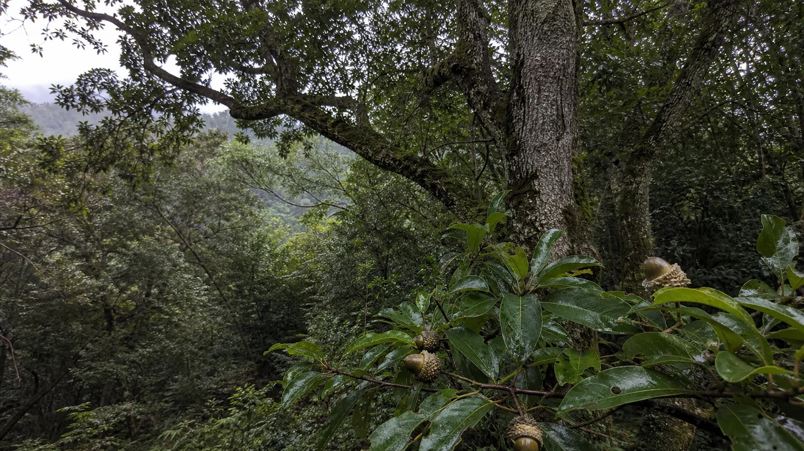
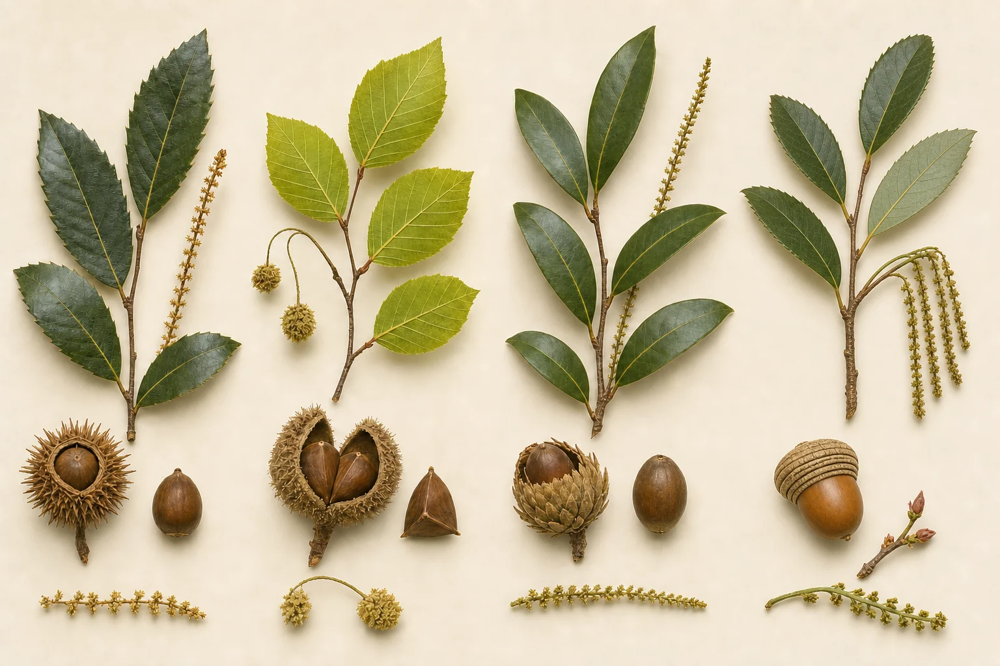

栲屬 Castanopsis
殼斗多為刺球狀，常含 1–3 枚堅果；雄花雄蕊多。

Image 2.0 依同種實物照片與林試所圖版重建・非鑑定照片
FAMILY FAGACEAE
殼斗科的果實是堅果；包在外側、像杯子、碗、刺球或環紋托座的構造叫做殼斗。它的包被程度、鱗片排列與刺的型態，常比單看葉片更有辨識力。
本圖鑑是學習與查考入口，不取代臘葉標本、檢索表或專家鑑定。
KEY MORPHOLOGY
圖版由 Image 2.0 依文獻特徵重建，從上到下依序為栲屬、水青岡屬、石櫟屬、櫟屬；實際鑑定仍應比對標本照片。

殼斗多為刺球狀，常含 1–3 枚堅果；雄花雄蕊多。
有柄殼斗四瓣裂，內有三稜堅果；臺灣僅一種。
每個總苞通常一朵雌花；殼斗具覆瓦狀鱗片。
殼斗有環紋型或鱗片型；包含常綠、落葉與灌木。
FIELD GUIDE
46 筆結果・點擊卡片查看樹形、葉、花、種子與細部特徵
找不到符合條件的物種，請調整搜尋文字或屬別。
NON-NATIVE APPENDIX
TBN 另列出 6 種在臺灣有歸化或栽培紀錄的殼斗科植物。它們不計入原生 46 種，但在公園、校園、苗圃與人為環境中仍可能遇見。
TBN 同時列有「金鱗栗屬」栽培紀錄，但目前分類樹未提供可納入本附錄的種階名稱，因此不自行推定物種。
TAXONOMIC SCOPE
栲屬 10、水青岡屬 1、石櫟屬 14、櫟屬 19；林試所圖鑑與分類研究常採此數。
依 TBN 2026-07-22 分類樹，排除有原生種下分類群的上位種名後，計得原生最低分類群 46 筆。
把原生、引進、變種與型合計為 60 個分類群；適合追查歷史名稱，不能直接等同原生種數。
分類與保育狀態採 TBN；命名背景參照 TaiCOL；形態摘要交叉比對《臺灣植物誌》與林試所《台灣橡實森林博覽會》。沒有廣泛公認英文俗名的物種，以「描述性英文對照」呈現並加註，避免創造成正式通名。
SOURCES & REVIEW
資料查核：2026-07-22。分類學會隨新研究修訂；若用於調查、保育或正式出版，請回查來源的最新版本。